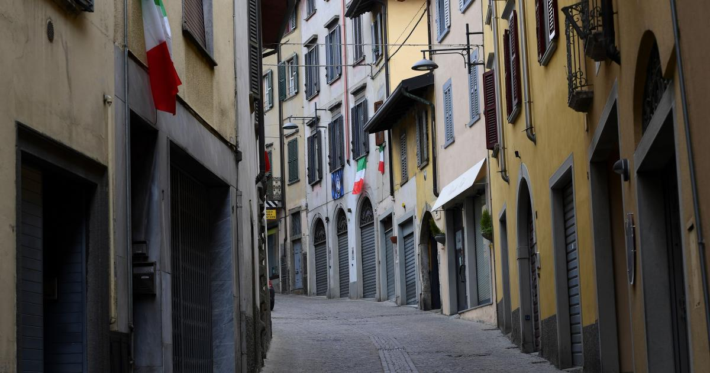

Are Lockdowns Necessary?What Data From 10 Countries Show
The 10 countries we studied have taken vastly different approaches to handling COVID-19 with varying degrees of success.
Maximum effort here in the U.S. should be concentrated on protecting those at risk, as well as the livelihoods of American families.
A new Heritage Foundation special report analyzes the COVID-19 responses of 10 countries, with varying levels of economic freedom, to better understand which policies might have been more effective than others.
Here’s what the report found.
The 10 countries we studied have taken vastly different approaches to handling COVID-19 with varying degrees of success.
>>> What’s the best way for America to reopen and return to business?The National Coronavirus Recovery Commission, a project of The Heritage Foundation, assembled America’s top thinkers to figure that out.So far, it has made more than 260 recommendations.Learn more here.
The evidence suggests that full lockdowns, such as those implemented in Italy and Norway, are not as effective as the more targeted approaches taken in other countries, such as in South Korea and Iceland.
In fact, as we discuss, those two countries have fared considerably better than the United States has in handling COVID-19 without shutting down their economies.
Another key finding is that Australia and New Zealand, two neighboring countries with similar climates, have had similar outcomes regarding COVID-19, even though they took very different approaches to dealing with the virus.
In particular, New Zealand virtually locked down the entire country in the spring, while Australia took a less restrictive approach.
Yet, both countries have contained the virus at similar levels.
Specifically, Australia had 13,595 COVID-19 cases (0.0534% of its population) and 139 deaths (0.000546% of its population), while New Zealand had 1,556 cases (0.0323% of its population) and 22 deaths (0.000457% of its population).However, New Zealand’s unemployment level is forecast to increase to 9.2% by December, while Australia’s is expected to increase to 7.6% over this same time period.
From a public health perspective, strict lockdowns can cause additional problems.
As 80% of COVID cases do not require hospitalization, when people isolate at home upon contracting COVID-19, they may infect their family members, including those who are at risk.
In fact, New York Gov.Andrew Cuomo and Broward County, Florida, Mayor Dale Holness have both noticed this phenomenon.Cuomo was, in fact, quite surprised, noting: 'If you notice, 18% of the people came from nursing homes, less than 1% came from jail or prison, 2% came from the homeless population, 2% from other congregate facilities, but 66% of the people were at home, which is shocking to us.'
Two additional countries that took very different approaches to dealing with COVID-19—and experienced very different outcomes—are South Korea and Italy.
South Korea permitted much of its economy to remain open, choosing instead to engage in aggressive testing and isolating the infected, either via hospitals or isolation centers.South Korea also engages in extensive digital contact tracing to notify people when they have come in contact with others having COVID-19.
As of July 22, South Korea (population of more than 51 million) has had13,979 cases and 298 deaths (0.0272% and 0.000579% of its population, respectively.)
Italy, on the other hand, pursued a strict lockdown policy when the virus was spreading heavily in the spring.The country has a population of 60 million, comparable to South Korea.As of July 22, however, Italy has had 245,590 cases and 35,097 deaths (0.406% and 0.058% of its population, respectively), orders of magnitude higher than South Korea.
Maintaining a strong economy and protecting public health are not mutually exclusive.And although many states here in the U.S. have pursued strict stay-at-home orders, our country has not done well from either perspective, currently having more than 4 million cases (1.26% of the population) and 148,490 COVID-19-related deaths (0.0449% of the population).
Thus, although it is impossible to control for all of the differences between countries, these figures rank the United States—despite having instituted stay-at-home orders—behind many of the other developed nations we examined.
Moreover, as of July 27, with a first quarter gross domestic product loss of 5%, and a June unemployment rate of 11%, the U.S. should develop a better approach.
For instance, maximum effort here in the U.S. should be concentrated on protecting those at risk, as well as the livelihoods of American families.Among the many countries we examined, our study notes that there are aspects of the South Korean approach that lawmakers can learn from.
When recently asked about the status of the battle with COVID-19, Dr.Anthony Fauci, the director of the National Institute of Allergy and Infectious Diseases, said, 'We are certainly not at the end of the game, I’m not even sure we’re halfway through.'
As Heritage Foundation research has discussed, focusing on hot spots, protecting the elderly and most vulnerable, utilizing isolation centers to prevent the virus from spreading, taking advantage of contact tracing, and engaging in appropriate testing are policies lawmakers should consider in the coming months.
With these and other recommendations also suggested by The Heritage Foundation’s National Coronavirus Recovery Commission, we can be well-equipped to win the fight against this very dangerous enemy.
Posted On: 2020-07-29T00:00:00
Posted By: Commentary By

Content Date: 2020-07-29
Download Date: 2021-05-13
Document ID: L0C04BZT4